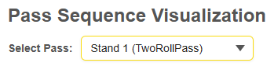
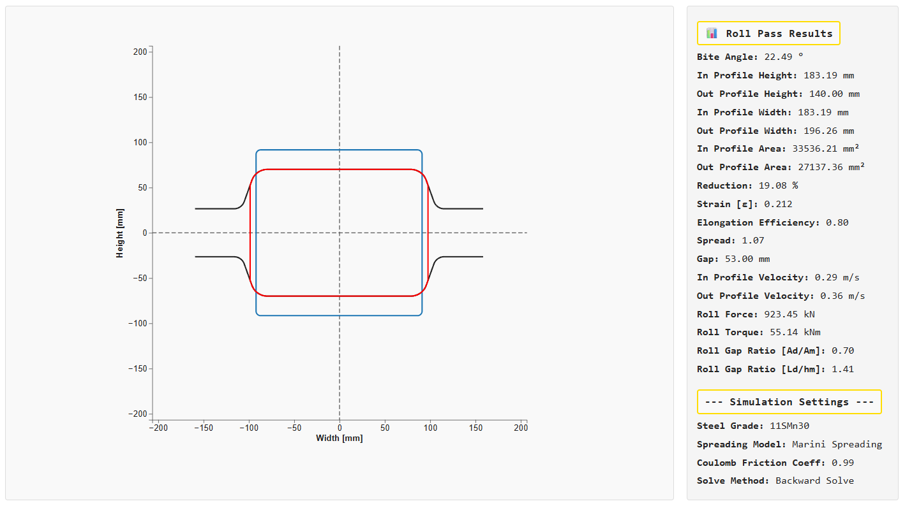
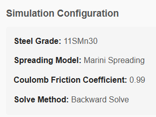
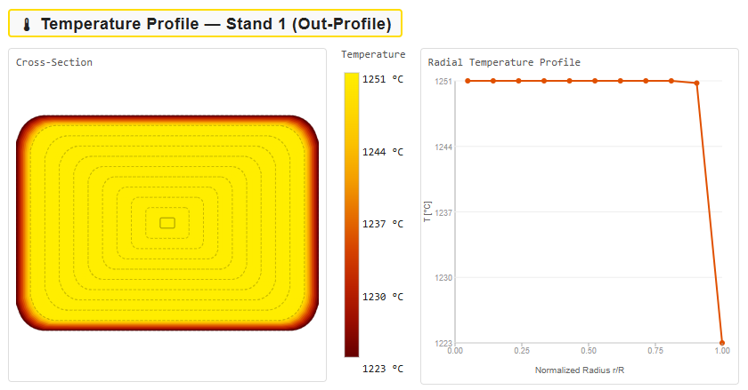
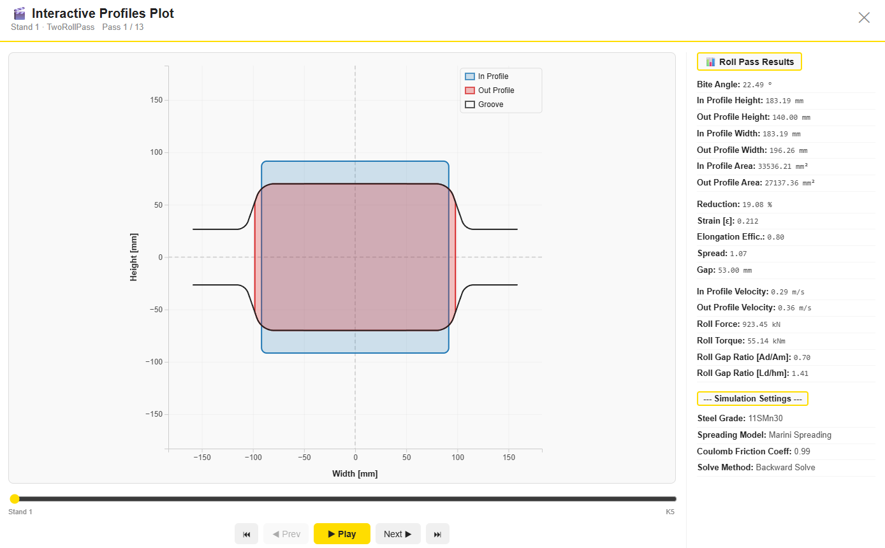
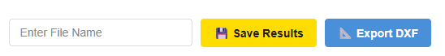
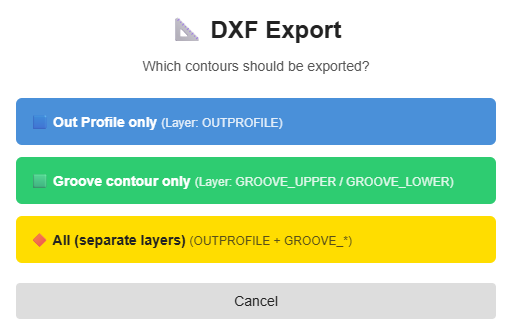
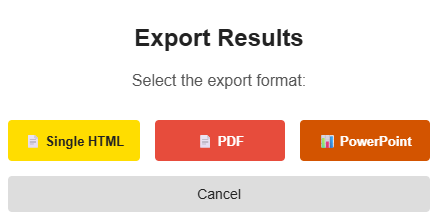

PyRoll GUI | Date: June 2026
The Pass Plots tab provides a detailed, per-pass visual analysis of the simulation results. After a successful simulation run, every roll pass in the sequence can be inspected individually: the groove and profile geometry is displayed as a scaled 2D cross-section, temperature distribution across the workpiece is shown as a colour-coded heat map, and an interactive animation allows navigating through all passes in sequence.
The tab is read-only — no simulation parameters are changed here. All visualizations refer to the most recent simulation run.
At the top of the tab, a dropdown labelled Select Pass lets you choose which roll pass to inspect. The list is populated automatically after each simulation run and contains every pass in the sequence in order.

Each entry in the dropdown shows:
Selecting a different pass immediately updates all plots and result values on the page — the Roll Pass Visualization, Temperature Profile, and the Roll Pass Results sidebar all switch to the chosen pass without any additional confirmation step.
The central element of the tab is the Roll Pass Visualization — a scaled 2D cross-section drawing that shows the relationship between the incoming workpiece profile, the outgoing profile, and the groove geometry of the rolls. To the right of the plot, the Roll Pass Results sidebar immediately shows all calculated values for the selected pass (Bite Angle, In/Out Profile Height, Roll Force, Torque, etc.) alongside the geometry — no extra navigation required.

Three geometric elements are drawn in the plot:
| Element | Colour | Description |
|---|---|---|
| In Profile | Blue | Cross-section of the workpiece entering the roll pass. Can be any shape (round, square, oval, rectangular, etc.) — either the initial billet geometry or the out-profile of the preceding pass. |
| Out Profile | Red | Cross-section of the workpiece leaving the roll pass. Shows the actual deformed shape after the simulation. |
| Groove Contour | Black outline | The roll groove geometry defined in the Pass Design tab. The Out Profile should fit within the groove boundaries. |
Both axes are labelled in millimetres. The coordinate origin is at the roll gap centre. The groove flanks (flat portions extending beyond the groove) are shown as horizontal black lines at the top and bottom.
Above the Roll Pass Visualization, a Simulation Settings panel summarises the key simulation parameters that were active when the simulation was run. These values are shown for traceability and cannot be edited from this tab.

| Field | Description |
|---|---|
| Steel Grade | The material selected in the In-Profile tab. Determines the flow stress model and temperature-dependent material properties. |
| Spreading Model | The spreading model chosen for the simulation run (e.g. Marini Spreading, Wusatowski). |
| Coulomb Friction Coeff | The friction coefficient used in the roll force and torque calculations. |
| Solve Method | Either Forward Solve (calculate out-profile from given gap) or Backward Solve (determine gap from target out-profile). |
Above the Simulation Settings, a Roll Pass Results panel lists the calculated numerical results for the selected pass. These are the same values shown in the Results tab table, presented here alongside the geometry plot for direct comparison.
| Parameter | Unit | Description |
|---|---|---|
| Bite Angle | ° | Angle of the workpiece entering the roll gap. Relevant for roll force and stability. |
| In Profile Height | mm | Height of the incoming workpiece cross-section. |
| Out Profile Height | mm | Height of the outgoing workpiece cross-section (equals the roll gap for symmetric passes). |
| In Profile Width | mm | Width of the incoming workpiece cross-section. |
| Out Profile Width | mm | Width of the outgoing workpiece, including lateral spread. |
| In Profile Area | mm² | Cross-sectional area of the incoming profile. |
| Out Profile Area | mm² | Cross-sectional area of the outgoing profile. |
| Reduction | % | Area reduction: (A_in − A_out) / A_in × 100 |
| Strain [ε] | — | Logarithmic true strain of the pass. |
| Elongation Efficiency | — | Ratio of actual elongation to theoretical maximum elongation (0–1). |
| Spread | — | Ratio of out-profile width to in-profile width. Values > 1 indicate lateral spread. |
| Gap | mm | Roll gap (distance between the roll surfaces at the pass centre). |
| In Profile Velocity | m/s | Rolling speed of the workpiece entering the stand. |
| Out Profile Velocity | m/s | Rolling speed of the workpiece leaving the stand, increased by elongation. |
| Roll Force | kN | Total separating force on the rolls during the pass. |
| Roll Torque | kNm | Total torque required per roll for the pass. |
| Roll Gap Ratio [Ad/Am] | — | Ratio of projected contact area to mean cross-section. Indicates fill quality. |
| Roll Gap Ratio [Ld/hm] | — | Ratio of contact arc length to mean bar height. Relevant for spread model validity. |
When the selected pass is an AsymmetricRollPass — a pass where the upper and lower rolls have different diameters or speeds — the Roll Pass Visualization section expands automatically to show three plots instead of one:

![Symmetric sub-pass upper — Stand 14 [upper]](img/pass_plots_symmetrical_upper_roll_pass.png)
![Symmetric sub-pass lower — Stand 14 [lower]](img/pass_plots_symmetrical_lower_roll_pass.png)
The Roll Pass Results sidebar of the combined asymmetric pass shows Working Ø Upper and Working Ø Lower (effective working diameters of each roll) instead of the standard Roll Gap Ratio values. Elongation Efficiency, Spread, and the Roll Gap Ratios are shown as N/A for the combined pass — these values are computed individually in the upper and lower sub-passes.
Below the three roll pass plots, an additional Lendl Pillar Cross-Section section is shown. It contains two side-by-side charts:

Below the Roll Pass Visualization, a Temperature Profile Plot is shown for the out-profile of the selected pass. It visualises the thermal state of the workpiece cross-section after leaving the roll gap and consists of two linked views displayed side by side.

The left panel shows a filled colour-map of the out-profile cross-section. The colour at each point represents the local temperature calculated by the thermal model:
Iso-temperature contour lines are overlaid as dashed curves, spaced at equal temperature intervals derived from the colour bar on the right. The colour bar shows the exact temperature range (minimum at bottom, maximum at top) with °C labels at each contour level.
The right panel shows the Radial Temperature Profile — a line chart of temperature (vertical axis, °C) plotted against the normalized radius r/R (horizontal axis, 0 = centre, 1 = surface).
The chart makes the temperature gradient visible as a single curve:
The Interactive Profiles Plot is an animated, navigable view of all passes in the sequence. It opens in a full-screen modal overlay and allows you to step through every pass — forward, backward, or as a continuous animation.
Click the 🎞 Open Interactive Plot button to launch the modal.

The modal contains the same three geometric elements as the static Roll Pass Visualization (In Profile in blue, Out Profile in red, Groove in black/transparent), but now filled with semi-transparent colour to make overlap areas clearly visible.
A control bar at the bottom of the modal provides the following actions:
| Control | Action |
|---|---|
| ⏮ (First) | Jump to the first pass in the sequence. |
| ◄ Prev | Move to the previous pass. |
| ▶ Play | Start automatic animation through all passes. Click again to pause. |
| Next ► | Move to the next pass. |
| ⏭ (Last) | Jump to the last pass in the sequence. |
A progress slider below the plot shows the current position in the sequence. The pass name and number (e.g. Stand 1 · TwoRollPass · Pass 1 / 13) are displayed in the modal header. The Roll Pass Results sidebar updates in real time as you navigate between passes.
Close the modal with the ✕ button in the top-right corner.
The bottom bar of the Pass Plots tab contains the file name input field and the two primary export actions for this pass.

| Control | Description |
|---|---|
| Enter File Name input | Type a base file name here. This name is used as the default for both the Save Results and Export DXF dialogs. |
| 💾 Save Results | Opens the Export Results dialog to save the full simulation results in HTML, PDF, or PowerPoint format. |
| 🔺 Export DXF | Opens the DXF Export dialog to export the groove and profile contours of the currently selected pass as a DXF file. |
After clicking 🔺 Export DXF, a dialog appears asking which contours should be included in the exported DXF file.

Three export variants are available:
| Option | DXF Layer(s) | Contents |
|---|---|---|
| Out Profile only | OUTPROFILE |
Only the calculated out-profile contour of the workpiece cross-section. Useful for downstream forming tools or FEM pre-processing. |
| Groove contour only | GROOVE_UPPER / GROOVE_LOWER |
Only the upper and lower roll groove geometry. Useful for roll design verification or CNC machining drawings. |
| All (separate layers) | OUTPROFILE + GROOVE_* |
All contours exported together, each on its own named layer. Layers can be toggled independently in CAD software. |
The DXF file is saved to the location selected in the system save dialog. The file name suggested in the dialog corresponds to the text entered in the Enter File Name field, appended with the stand name.
The 💾 Save Results button opens the Export Results dialog, which provides three document export formats for the full simulation results.

| Format | Description |
|---|---|
| 🗒 Single HTML | Exports a self-contained HTML report with all result tables and plots embedded. Can be opened in any web browser without an internet connection. Ideal for archiving or sharing results with colleagues. |
| Generates a print-ready PDF document with all result tables and plots. Uses the browser's built-in PDF print engine. Recommended for formal documentation. | |
| 📊 PowerPoint | Creates a PPTX presentation file with one slide per plot or result section. Useful for embedding results directly into engineering reports or presentations. |
Michael Molter | PyRoll GUI – Pass Plots Guide